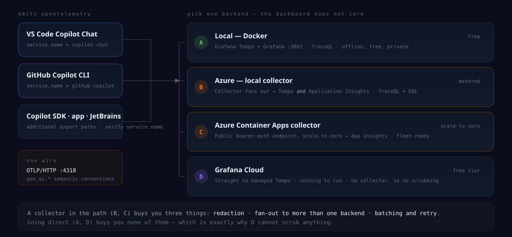
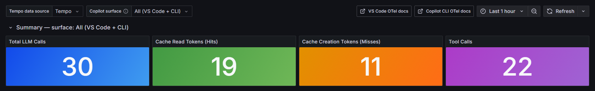

Copilot,
Traced.
Your AI pair programmer is a distributed system. Measure it like one.
Three questions most teams
cannot answer yet.
How many tokens?
The actual input, output, cache-read, and cache-creation counts.
What did it cost?
For that turn, from the span - not from a monthly aggregate.
Was the prefix cached?
Or did one volatile byte make the model process it again?
Treat Copilot like the distributed system it is.
Measured
Requests, dependencies, retries, latency, errors, cache hit rate, and cost per operation.
Usually judged by feel
A planner calls models and tools, crosses networks, retries, compacts context, uses a cache, and creates a bill.
Two switches. One OTLP endpoint.
{
"github.copilot.chat.otel.enabled": true,
"github.copilot.chat.otel.exporterType": "otlp-http",
"github.copilot.chat.otel.otlpEndpoint": "http://localhost:4318",
"github.copilot.chat.otel.captureContent": false
}
setx COPILOT_OTEL_ENABLED "true" setx OTEL_EXPORTER_OTLP_ENDPOINT "http://localhost:4318" setx OTEL_EXPORTER_OTLP_PROTOCOL "http/protobuf" # Leave OTEL_SERVICE_NAME unset.
Coverage is wider - but it is not universal.
Strong paths
VS Code copilot-chat
Copilot CLI github-copilot
Copilot SDK configurable via TelemetryConfig
Verify the name
JetBrains now has an OTel export panel; its service name is not documented.
Copilot app uses the CLI runtime and has been observed as github-copilot.
Keep the claim narrow
Visual Studio has no documented customer export path.
Cloud coding agent exposes client-side session/outcome metrics, not its server-side execution trace.
One turn is a trace you already know how to read.
One user turn
Agent identity, aggregate tokens, cost, AI units, and turn count.
Model call
Model, input/output tokens, cache creation, time to first chunk.
Dependency call
Tool name, duration, error, and optional content.
Next model call
Same prefix, cache read, lower latency.
Click a span. live
A cache hit requires a stable prefix.

Cache hit rate is a leading indicator.
Prompt stability
System instructions, tool order, and conversation history are staying stable between calls.
Cost pressure
More cache creation means more input is processed as fresh instead of reused.
Latency pressure
Cache reads often reach the first streamed chunk faster than equivalent cold calls.
Pick the operating model you already trust.

Change the destination, not the signal. live
One dashboard, split by runtime.

All, VS Code, or Copilot CLI.
Read versus creation tokens over time.
Calls, p50, and time to first chunk.
Drill from a recent operation to raw spans.
Make an invisible regression visible. live
Measure the system without collecting the conversation.
Conversation stays out
Prompts, responses, system instructions, tool schemas, arguments, and results require explicit opt-in.
Enough to operate
Model, token counts, cache counts, duration, cost/AI units, service, agent, and tool names.
Identifiers remain
The CLI can emit a pseudonymous user ID; repo, branch, commit, organization, agent, and skill metadata can identify work.
Monday morning, in order.
See one machine
Start option A, enable VS Code and the CLI, use Copilot normally, and open the local dashboard.
Find the expensive misses
Sort by cache-creation tokens. Correlate spikes with truncation and compaction events.
Choose where the data should live
Keep it local, keep it in your Azure tenant, or use Grafana Cloud - with a collector when you need minimization and fan-out.
The tool writing your code
should not be the one system
you never measure.
Tokens, latency, tools, cost, and every cache miss are already on the wire. Point them somewhere useful.
Take it with you.
github.com/webmaxru/
copilot-opentelemetry
Four backend options, collector configs, dashboards, Azure scripts, and the source for this deck.
| Copilot CLI OTel monitoring | GitHub Docs |
| Monitor agent usage | VS Code Docs |
| Copilot SDK instrumentation | GitHub Docs |
| JetBrains OTel export | GitHub Changelog |